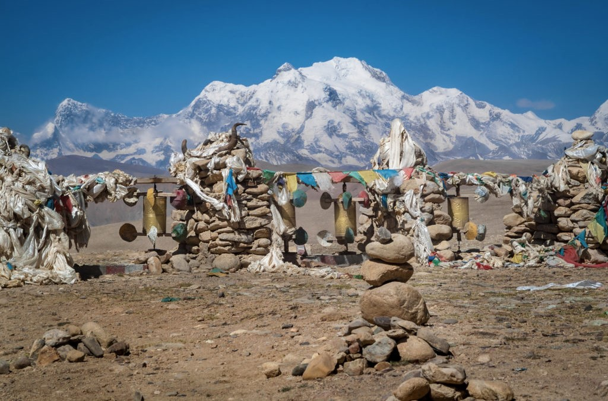

Welcome to Tibet Travel Guide!
Explore the breathtaking landscapes, rich culture, and spiritual heritage of Tibet.
Why Visit Tibet?
| Reason | Description |
|---|---|
| 🏔 Stunning Himalayan Scenery | Marvel at the breathtaking peaks, including Mount Everest, and enjoy the peaceful beauty of the Tibetan Plateau. |
| 🕌 Ancient Buddhist Monasteries | Visit spiritual landmarks like the Potala Palace and Jokhang Temple, which hold centuries of history. |
| 🎉 Unique Tibetan Culture and Festivals | Experience vibrant celebrations like Losar (Tibetan New Year) and the Shoton Festival, showcasing traditional music, dance, and food. |
| 🙏 Spiritual Experiences and Pilgrimages | Engage in deep spiritual journeys by exploring sacred sites like Mount Kailash, a major pilgrimage destination. |